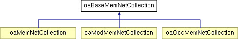

oaBaseMemNetCollection Class Reference
Inheritance diagram for oaBaseMemNetCollection:

Detailed Description
This is the abstract base class of the derived member net collection classes. Member nets can be used to trace the connectivity implied by the use of multi-bit nets and connections.
The member net collection classes represent collections of nets that the starting net is a member of.
See the derived classes for more details.
Member Function Documentation
| oaUInt4 oaBaseMemNetCollection::getCount |
( |
|
) |
|
|
|
|
This function returns the number of objects in the collection.
Note: This function is not guaranteed to be fast. For some collections, the database checks all the members of the collection. |
| oaBoolean oaBaseMemNetCollection::isEmpty |
( |
|
) |
|
|
|
|
This function determines if there are any members in the collection. |
Friends And Related Function Documentation
friend class oaBaseMemNetIter [friend]
|
|
The documentation for this class was generated from the following files:
Return to top of page
Copyright © 2002 - 2010 Cadence Design Systems, Inc.
All Rights Reserved.